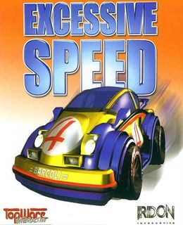
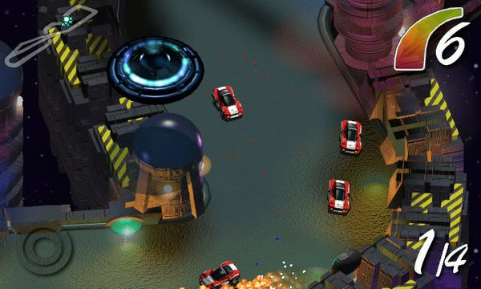
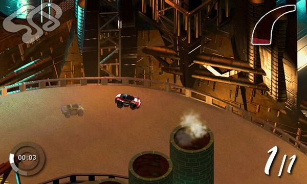
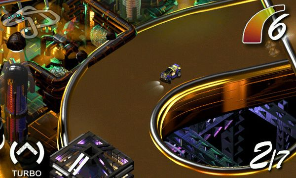

Excessive Speed Game – Overview – Free Download – PC – Compressed – Specs – Screenshots
Type of game: Arcade, Racing
Excessive Speed (165 MB) is an Arcade, Racing video game. Developed and published by 1C Company, Chaos Works, Legendo Entertainment. It was released on January 1, 1999 for Windows. Excessive Speed is a top-down view 2d racing game. You can race with one of the 7 different cute little bitmap-cars over 14 small tracks. On the tracks are several goodies and weapons which you can test on your opponent, so you’ll finish first. In fact, this game contains a very high amount of powerups: 17!
-
OS: Windows 10/11 (64-Bit)
-
Processor: 1.8 GHz
-
Graphics Card: NVIDIA GeForce GT 730 2GB or AMD Radeon HD 7850 2GB
-
DirectX: Version 11
-
RAM: 512 GB



Excessive Speed Download
Game Size: 165 GB